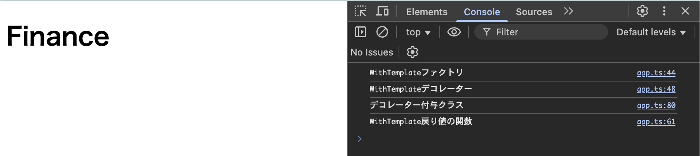
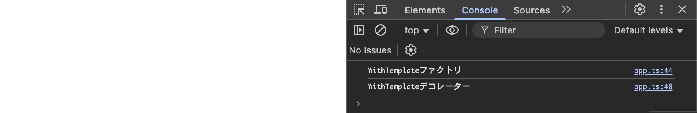
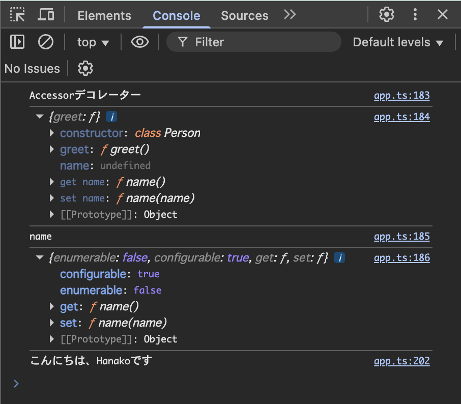

デコレーターの戻り値
クラスデコレーター、メソッドデコレーター、アクセサーデコレーターは値を返すことができる。 デコレーターファクトリーでデコレーターをreturnするということではなく、デコレーター関数の中で値をreturnすることができるということ。どんな値を返せるかはデコレーターの種類によって違う。 ※メソッドデコレーターはメソッドデコレーター（Autobind）で説明
クラスデコレーター
クラスデコレーターの場合は、コンストラクタ関数をreturnすることができる。デコレーター関数が引数で受け取ったconstructorを別のもの(コンストラクタ関数やclassなど)に置き換えることができる。 以下の例では、対象のデコレーターが追加されたクラスを、新しいクラス(コンストラクタ関数)で置き換えている。 Point このように書くことで、DOMへのテンプレートの表示ロジックは、クラスをインスタンス化したときに実行される。 デコレーター関数は通常、デコレーターが付与されたクラスが評価されたときに実行されるが、以下のように戻り値に定義したクラスやコンストラクタ関数はインスタンス時に実行される。 以下の例のジェネリック型定義(<T extends {new(..._: any[]): {name: string}}>)の詳細T：classを受け取るので<T extends {new(引数)}>と書く、{new(引数)}がclassを意味する new：コンストラクタ関数のこと ...args：コンストラクタ関数の引数は柔軟にするためレストパラメーター(...)、型はany[]にする {}：new関数の戻り値はオブジェクト{}を指定 {name: string}：新しいconstructorでnameプロパティを使用しているので、originalConstrutorはnmaeプロパティが含まれる関数のみ許可する
// デコレーターファクトリー
function WithTemplate(template: string, hookId: string) {
console.log("WithTemplateファクトリ");
// デコレーター関数(クラスが定義された時に実行される)
return function<T extends {new(..._: any[]): {name: string}}> (originalConstructor: T) {
console.log("WithTemplateデコレーター");
// デコレーター関数の戻り値(インスタンス時に実行される)
// ここではデコレーター関数の引数で受け取ったコンストラクタ関数(originalConstructor)を継承し、処理を追加する
return class extends originalConstructor {
// このクラスのconstructorを追加
// このデコレーターの呼び出し元クラスのconstructorは、以下の内容に置き換えられる
// 引数はoriginalConsutoructorの引数に合わせる。引数は使用しないので、引数名は"_"に変更する
construcor() {
super();
const hookEl = document.getElementById(hookId);
if (hookEl) {
hookEl.innerHTML = temlate;
hookEl.querySelector.textContent = this.name;
}
}
}
}
}
// デコレーターの呼び出し
@WithTemplate('<h1>Financeオブジェクト</h1>','app')
class calledDecorator {
name = 'Finance';
constructor() {
console.log("デコレーター付与クラス");
}
}
// インスタンス化
// この時、デコレーター関数の戻り値が実行される
const obj = new calledDecorator();
実行結果は以下のとおり。

また、インスタンス化(new calledDecorator)を消すと、クラスへの追加処理(デコレーターの戻り値)は実行されない。

アクセサーデコレーター
アクセサーデコレーターはクラスのgetterやsetterに適用できるデコレーター。 プロパティの種類 get: getの値を変更すれば、設定したgetメソsッドを返す set: setの値を変更すれば、設定したsetメソッドを返す configurable: プロパティの設定を変更・削除できるか制御できる enumerable: オブジェクトをループしたときに、このプロパティが出力されるかどうか制御できる アクセサーに変更を加えてデコレーターの戻り値に設定したコード例は以下のとおり。
// アクセサーデコレーターの例
// ProptertyDescriptorを上書きし、戻り値に設定する
function LogAccessor(target: any, propertyName: string, descriptor: PropertyDescriptor): PropertyDescriptor {
// 変更前のdescriptorをコピーし保持する
const before = {...descriptor}; // シャローコピー
// 変更前アクセサーを定数に格納
const originalGetter = descriptor.get;
const originalSetter = descriptor.set;
// Getterを上書き
if(originalGetter) {
descriptor.get = function() {
console.log(`Getting value of "${propertyName}"`);
// originalGetterが存在していれば、this(このオブジェクト)を呼び出し、getterの戻り値をresultに格納
const result = originalGetter?.call(this);
return result;
}
}
// Setterを上書き（最初の文字を大文字にする）
if(originalSetter) {
descriptor.set = function(val: string) {
console.log(`Setting value of "${propertyName}"`);
// 一文字目を切り離して大文字にし、二文字目以降と結合
const formatted = val.charAt(0).toUpperCase() + val.slice(1);
originalSetter?.call(this, formatted);
}
}
// 変更箇所をコンソールに出力
printDescriptorDiff(before, descriptor);
return descriptor;
}
// デコレーターを使用するクラス
class Person {
private _name: string = "";
// SetterとGetterの関数名を同じnameのため、デコレーターの付与は1つでOK。
@LogAccessor
set name(pName: string) {
this._name = pName;
}
get name() {
return this._name;
}
greet() {
console.log(`こんにちは、${this._name}です`);
}
}
// クラスのインスタンス生成
const p1 = new Person();
// nameをset
p1.name = "hanako";
// nameをGet
console.log(p1.name);
// greetの呼び出し
p1.greet();
変更前後の値を確認するために呼び出したprintDescriptorDiffは以下。
// 変更前後のdescriptorの差異を出力する関数
function printDescriptorDiff(bf: PropertyDescriptor, af: PropertyDescriptor) {
console.log(" ==Descriptor difference ==");
for (const key of Object.keys(af)) {
if (bf[key as keyof PropertyDescriptor] !== af[key as keyof PropertyDescriptor]) {
console.log(` ${key}が変更されました`);
console.log("Before:", bf[key as keyof PropertyDescriptor]);
console.log("After:", af[key as keyof PropertyDescriptor]);
}
}
console.log("=========================");
}
最初は普通に変更前後をコンソール出力しようとしたが、うまくいかなかった。その理由は以下のとおり。 変更前後の値を比較する処理の失敗遍歴 ＜失敗1＞ console.logでdescriptorの変更前後の値をコンソール出力したが、変更前が保持されない。 [理由] ・JavaScriptはインタープリター言語なので逐次実行される ・console.logの内部処理は、オブジェクトの「値」ではなく「参照先アドレス」を保持している ・画面やコンソールを表示(render)する時に、参照アドレス先の値を再評価して、表示している ・結果、表示のタイミングでは変更前も後も同じ参照アドレスを持っているので、内容が同じになってしまう ＜失敗2＞ JSON.stringgify()で変更前の値を保持したが、関数は保持されないため、Descriptorのアクセサー(setやget)も表示されなかった 以上の失敗を経て、Object.entries()を使って変更前後の差分を取る方法を選択。 アクセサーデコレーター内で変更前後を比較するために使用した関数は以下のとおり。
コンソールの出力結果は以下のとおり。
